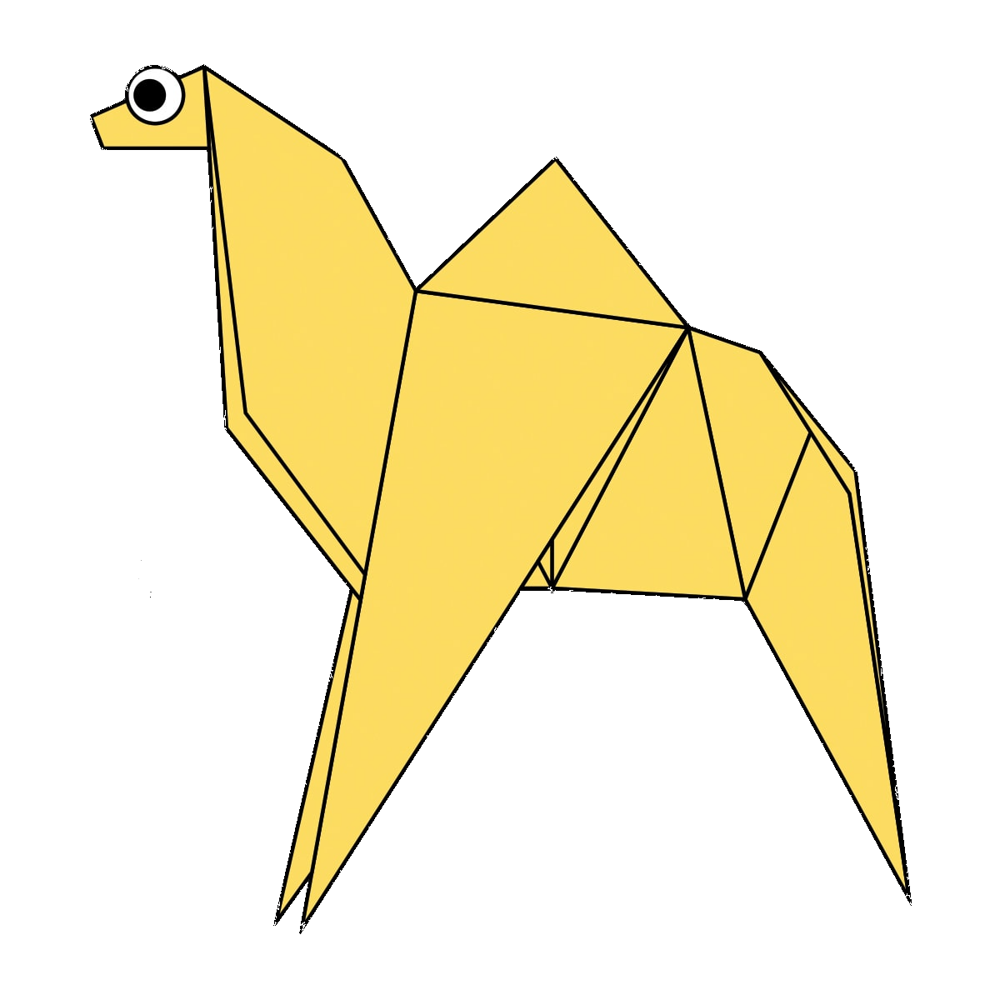
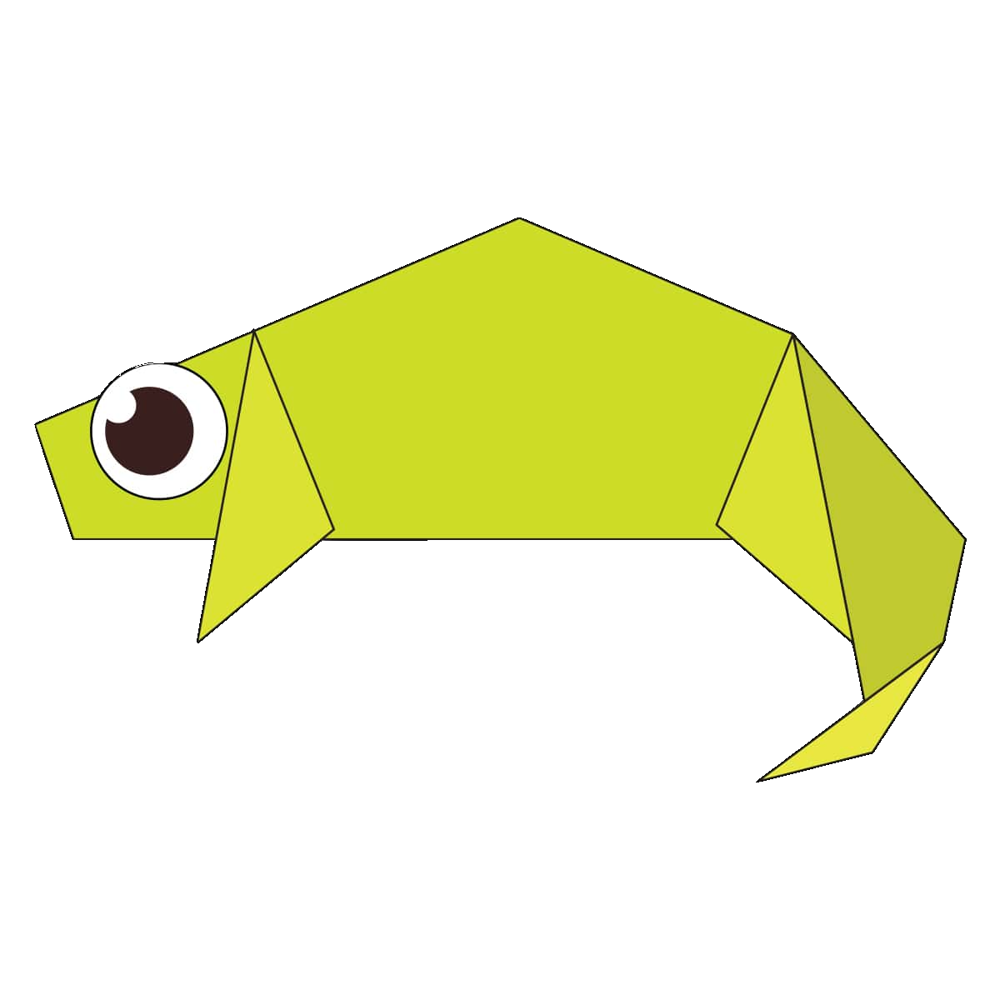
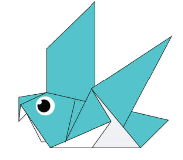
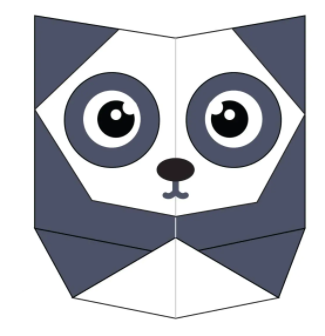
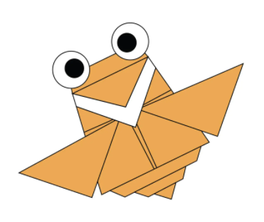

Origami Designs
Click On The Images To See How To Make Them
I Have Even Added Videos After Every Design
About Us
Follow Us
How To Make An Origami Camel

Interesting Facts About Camel :
-
Camels are furry
-
Camels can move easily across the sand due to their specially designed foot
-
When they find water they eat as much as possible
Having Problems ?
CLICK HERE TO SEE A VEDIO
How To Make An Origami Chameleon

Interesting Facts About Chameleon :
-
Unlike many lizards chameleon can not regrow its tail.
-
They mainly change color in order to communicate or regulate body temperature.
-
Some species of chameleons are Veiled chameleon, Panther chameleon.
Having Problems ?
CLICK HERE TO SEE A VEDIO
How To Make An Origami Pigeon

Interesting Facts About Pigeon :
-
Pigeons are incredibly complex and intelligent animals.
-
Pigeons are renowned for their outstanding navigational abilities.
-
Pigeons are highly sociable animals.
Having Problems ?
CLICK HERE TO SEE A VEDIO
How To Make An Origami Teddy Bear

Interesting Facts About Teddy Bear :
-
The term bear-hug was first recorded in 1846.
-
The Oxford English Dictionary dates the first use of the term teddy bear to 1906.
-
In 1902 in Germany, Steiff launched “Bear 55 PB”, the first toy bear with jointed arms and legs.
Having Problems ?
CLICK HERE TO SEE A VEDIO
How To Make An Origami Panda

Interesting Facts About Panda :
-
Panda have great camouflage for their environment
-
Their eyes are different to normal bears
-
Bamboo is critical to their diet.
Having Problems ?
CLICK HERE TO SEE A VEDIO
How To Make An Origami Flying Cicada

Interesting Facts About Flying Cicada :
-
Cicadas can survive a huge fall as babies
-
The loud whirring or buzzing sound you hear is an all-male cicada chorus.
-
Females may be attracted to the sound of motors
Having Problems ?
CLICK HERE TO SEE A VEDIO